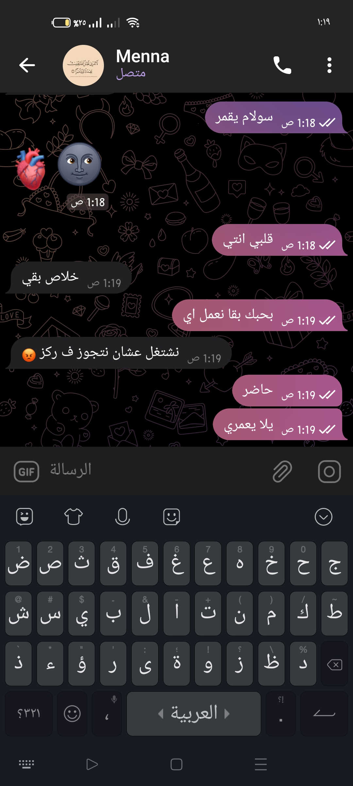
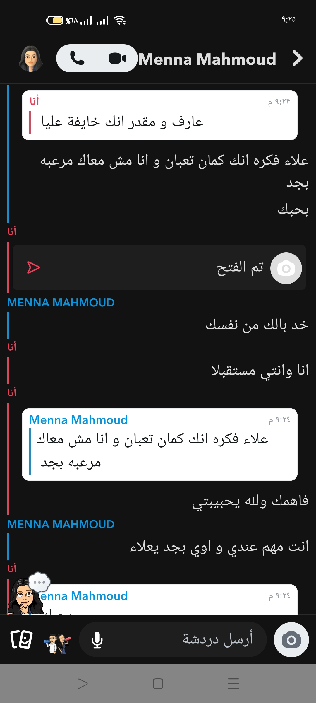

*مجرد شوية مشاعر تقدرش تشوفيها هنا*
(أول رسالة)
احبك مهما كانت الاشياء الغبيه التي افعلها لكي و مهما كان مدي كرهك لي و مهما كرهتيني سوف اظل احبك من كل قلبي انتي لستي مثل الاخرين انتي كل شيء لي مهما كانت الاشياء التي نفعلها سويا فا انتي لن تقلي في نظري ابدا و سوف اظل احبك مهما فعلتي في و اتمني انت تحبيني مهما فعلت لكي و اسف اني فعلت اشياء سيئة لكي و اوصلتك لقولك (اكرهك بجد و اكرهك) اسغ اني اوصلتك لهذه المرحلة اعلم اني غبي و افعل اشياء كثير ليست بصحيح و اني اظلمك معي كثيرا و اني من اسباب بل و السبب الرئيسي لكرهك لنفسك انا حقا اسف لكن ليس لدي شيء لأفعله فا انا ليس لي غيرك و لن يكون لي غيرك اعتذر علي كل شيء فعلته لكي و اتمني ان تسامحي نفسك و تسامحيني انتي اخر شيء لي في هذه الحياة اتمني ان تظلي معي
من حبيبك الذي لايمكنه العيش من غيرك علاء ♥
ثاني رسالة
عيناكي ارضي الوحيده و مازالت ارضي اري نفسي فيها سعيدا اري نفسي لاول مرة اري نفسي شخص سعيد و لاول مره في حياتي اشعر اني حي بوجودك بجانبي اتمني دوامك ليا دائما
أحبك
ثالث رسالة
بصي انا مش عارف فعلا اعبرلك عن مدي حبي ليكي و مدي امتناني ليكي عن وجودك في حياتي بس هحاول اتكلم اولا بجد من اول مظهرتي ف حياتي وانتي مفرحاني و مخلياني مبسوط بكل الطرق و فعلا اول مظهرتي انا منعت نفسي عن حاجات كتير حتي قبل منرتبط او نتكلم كتير من ساعت مدخلتي حياتي وانا حياتي متشقلبه و اتغيرت للاحسن بكتير و خلتيني شخص احسن بكتير خلتيني ابطل سجاير و خلتيني ابطل شتايم مبقتش زي الاول الاول الشتايم كانت علي لساني عادي جدا اكنها كلمات عاديه و خلتيني انتظم ب الصلي و خلتيني ابطل حاجات كتير منها المواضيع الديرتي و خلتيني و دا اعظم انتصار فعلا ليا و ليكي اني اقع ف حبك انا مبسوط اني معاكي و انك جمبي و اني بحبك مبسوط بمجرد اني اشوفك انا من قلبك كنت خلاص قولت مش هحب و خلاص هاخد النسوان علي اي حاجه ديرتي و خلاص لكن انتي جيتي و انقذتيني من دا كله انقذتيني من نفسي و خلتيها احسن احسن بوجودك و حبك ليا احسن بحنيتك عليا و تفهمك ليا احسن بكل المشاعر الصادقه الي بتقوليها ليا احسن بوجود شخص جمبي طول الوقت جت فتره كنت قولت مش هبين مشاعري لحد ولا حنيتي لانهم بيستغلوها ل صالحهم بس غيرت رأيي دا معاكي انتي فعلا تستاهلي كل جزء من الحنيه فيا و كل جزء من مشاعري مهما كان صغير انتي اعظم انتصاراتي و افضلها و اجملها
انا بحبك
رابع رسالة
خامس رسالة
في الحقيقة اشعر بالوحدة بدونك انتي من تملئين حياتي.
اريدك في حياتي دائمآ.


.jpg)
.jpg)